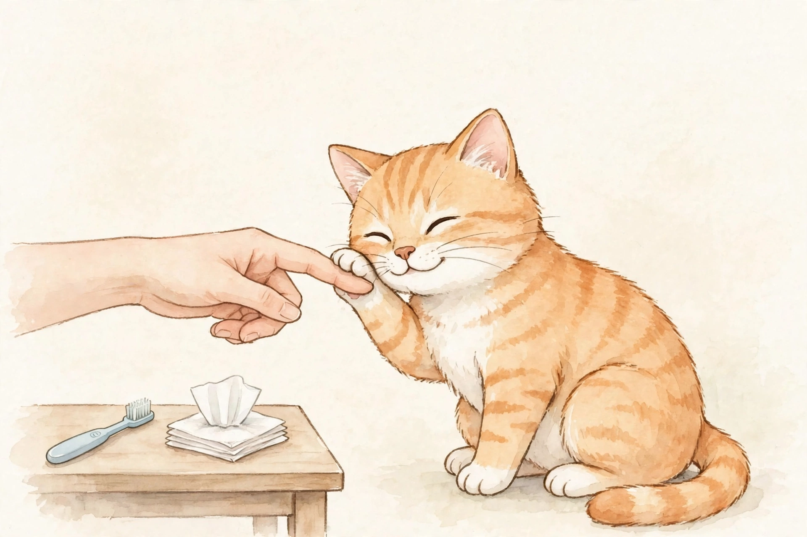

猫の歯みがきの始め方

歯垢は放っておくと歯石になり、口臭や歯ぐきのトラブルの原因になることがあります。とはいえ、猫の歯みがきは一気に始めようとすると嫌がられて続きません。この記事は一般的な飼育・ケアの情報で、病気の診断や治療のためのものではありません。口の中の様子に気になる変化があるときは、動物病院に相談してください。
この記事の内容
慣らし方の手順
1. 口のまわりを触ることから
まずは頬や口のまわりをやさしく触ることから始めます。触らせてくれたらほめる、を数日繰り返して、口のまわりを触られることに慣らします。
2. 歯みがきシートで拭く
指に歯みがきシートを巻いて、歯の表面を軽く拭きます。最初は前の方の歯だけでも大丈夫です。奥歯まで一度にやろうとせず、短い時間で切り上げます。
3. 猫用歯ブラシへ
シートに慣れてきたら、猫用の小さな歯ブラシに進みます。力を入れず、歯と歯ぐきの境目を小さく動かすのが基本です。
ケアの段階の比較表
| 段階 | すること | 使うもの | ポイント |
|---|---|---|---|
| 1. 口のまわりを触る | 頬や口のまわりをやさしく触り、触らせてくれたらほめます | なし | 数日繰り返して、口のまわりを触られることに慣らします |
| 2. シートで拭く | 指に歯みがきシートを巻いて、歯の表面を軽く拭きます | 歯みがきシート | 最初は前の方の歯だけでも大丈夫です。短い時間で切り上げます |
| 3. 猫用歯ブラシ | 歯と歯ぐきの境目を、力を入れずに小さく動かします | 猫用の小さな歯ブラシ | シートに慣れてきたら進む段階です |
まずこれ（PR）

頻度の目安
歯垢は数日で歯石になると言われるため、毎日が理想とされますが、最初から毎日を目指すと続かないことも多いものです。まずは週に数回から始めて、猫と飼い主さんのペースで回数を増やしていくのが現実的です。
無理をしないコツ
- 嫌がったらその日は終わりにする。押さえつけて行わない
- できたところまでをほめる。ごほうびを組み合わせるのも一つの方法です
- 眠そうなときや遊びで興奮しているときは避け、落ち着いている時間に行う
注意
- 人用の歯みがき粉は使わないでください。猫にとって良くない成分（キシリトールなど）が含まれることがあります。使う場合は猫用のものを選んでください。
- 口臭が強い、食べにくそうにしている、よだれが増えた、歯ぐきが赤い・腫れているといった様子が続くときは、動物病院で口の中を見てもらってください。
- 精油（アロマオイル）は猫に使わないでください。口に入るケア用品は、必ず猫用のものを選んでください。
よくある質問
- 歯みがきは毎日必要ですか？
- 歯垢は数日で歯石になると言われるため、毎日が理想とされます。ただ、最初から毎日を目指すと続かないことも多いので、まずは週に数回から始めて、猫と飼い主さんのペースで回数を増やしていくのが現実的です。
- 人用の歯みがき粉を使ってもいいですか？
- 使わないでください。猫にとって良くない成分（キシリトールなど）が含まれることがあります。使う場合は猫用のものを選んでください。
- 歯みがきシートだけで十分ですか？
- シートは慣らすための入口の段階です。シートに慣れてきたら、猫用の小さな歯ブラシに進むのが基本です。なお、口臭が強い、食べにくそうにしている、よだれが増えた、歯ぐきが赤い・腫れているといった様子が続くときは、動物病院で口の中を見てもらってください。
おすすめ用品（PR）
この記事のテーマに合わせて選んだ用品です。詳しくは販売ページでご確認ください。

※本記事の商品リンクは楽天アフィリエイトによる広告リンクです。価格や在庫は販売ページでご確認ください。
猫のLINEスタンプ
このサイトの運営者（222キャラ工房）が作っている、猫のLINEスタンプです。毎日の連絡にどうぞ。